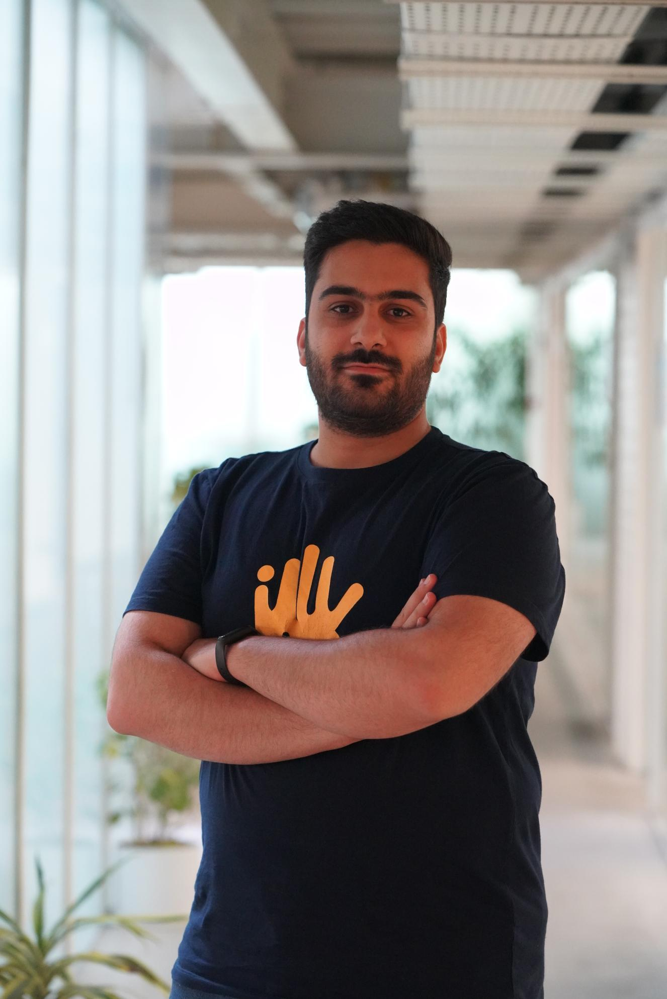
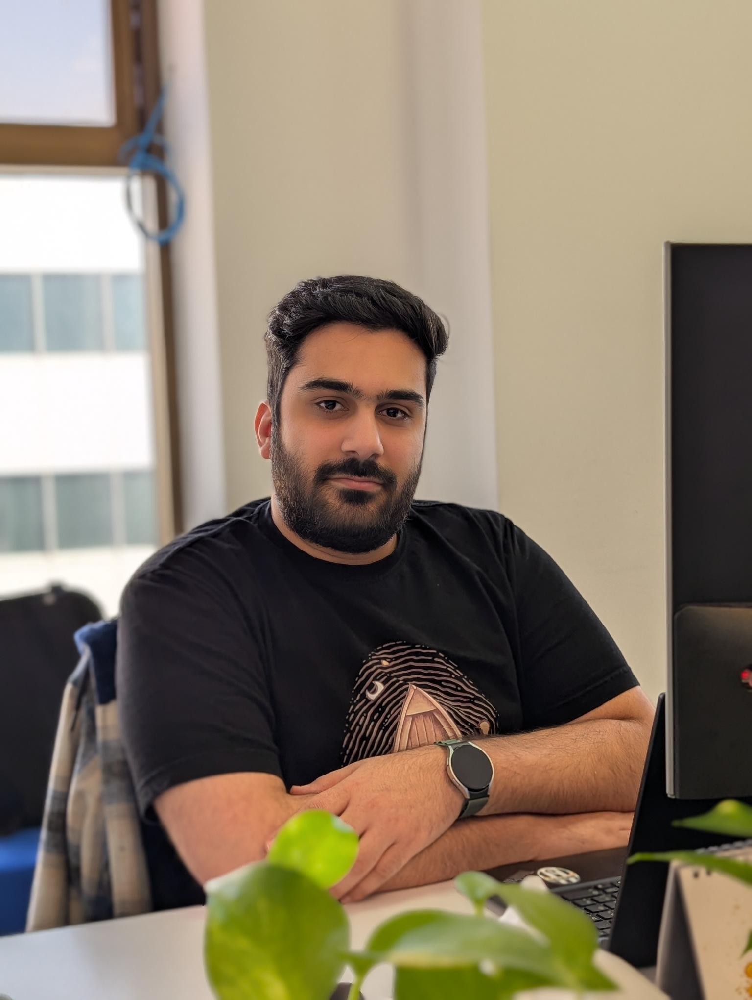

Organization
development
Translating business needs into clear roles, organizational levels, and structures—with the governance to make them work.
PEOPLE & ORGANIZATION DEVELOPMENT
I’m Mohammad Sadeghi. I connect people, evidence, and business strategy to build organizations that work better.

BUSINESS THINKING.
PEOPLE AT THE CENTER.
01 / AREAS OF FOCUS
Good HR connects the decisions organizations make about structure, performance, development, and reward.
Translating business needs into clear roles, organizational levels, and structures—with the governance to make them work.
Connecting performance conversations, calibration, and growth decisions through consistent expectations and meaningful feedback.
Turning people data into useful insight, giving leaders a clearer view of organizational patterns and the questions behind them.
Bringing structure to pay decisions and simplifying HR workflows with an eye on fairness, usability, and business constraints.
02 / RECENT WORK
SNAPP PAYRecent work at Snapp Pay, connecting people practices, organizational clarity, and better-informed decisions.
Connecting self-assessment, 360° feedback, manager assessment, and calibration within a six-month review cycle.
Leading process and assessment design in partnership with HR business partners, alongside manager guidance and employee communications.
Developing a shared language for performance, potential, and organizational readiness to support calibration and development conversations.
Connecting market references, internal grades, and budget constraints in a practical framework for pay decisions.
Leading salary-band development and reviewing market analysis, band design, and budget scenarios with the team.
Defining decision rules for promotions and market adjustments, with clearer roles and budget boundaries for salary discussions.
Building HR reporting infrastructure and dashboards around employee effectiveness and performance conversations.
Translating HR questions into data requirements, analytical models, and reporting that supports the team’s work.
Creating a foundation for people analytics by connecting HR data, defining useful measures, and making information easier to explore.
Establishing common expectations for responsibility, autonomy, complexity, decision-making, and organizational impact.
Leading framework development with the team and connecting it to role definitions, organization design, and talent decisions.
Bringing organizational-level expectations into calibration and promotion discussions, so decisions share a clearer reference point.
Different projects. A connected purpose:
making people practices work as a system.

03 / A LITTLE ABOUT ME
I started in mechanical engineering and went on to earn an MBA in Human Resources at the University of Tehran. That combination shapes how I approach work: understand the system, examine the evidence, and consider the people within it.
Today, I lead People & Organization Development at Snapp Pay. My work spans performance and talent management, organization development, people analytics, total rewards, and HR process improvement.
I’m interested in the space where people decisions meet business decisions—and in making complex ideas useful in everyday organizational life.
04 / HOW I THINK ABOUT THE WORK
Start with the business problem and the organization’s realities.
Combine data with the perspectives of the people doing the work.
Build clear, fair processes that people can actually use.